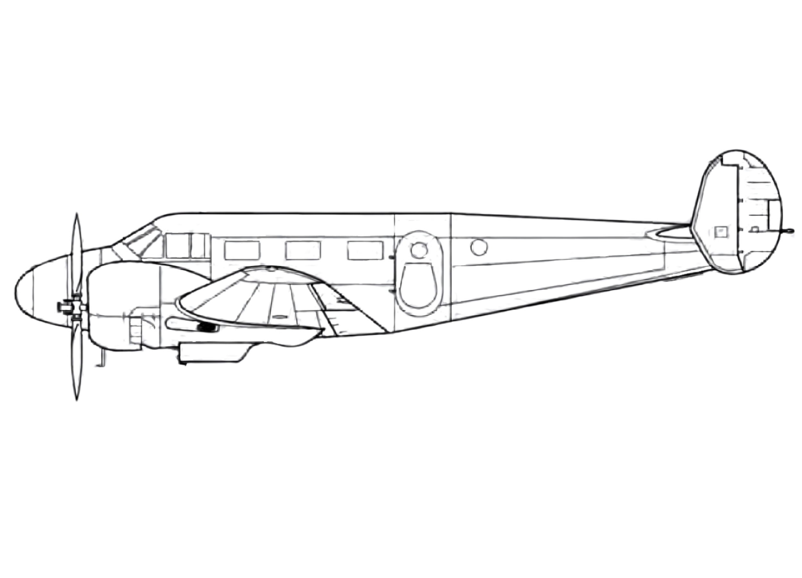
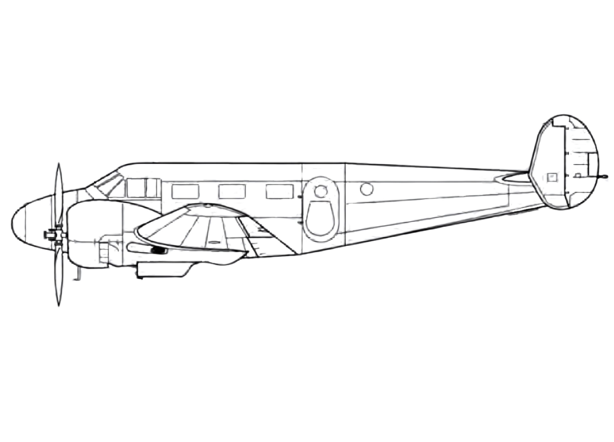
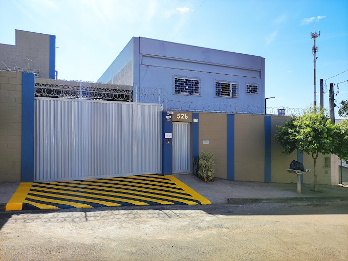

A SOLUÇÃO CONFIAVEL PARA A SUA AERONAVE

Quem Somos?
Em Nova Odessa, interior de São Paulo, José Eduardo de Almeida, um profissional com vasta experiência no setor aeronáutico, decidiu empreender e desenvolver seu próprio negócio. Munido de peças obtidas de seu emprego anterior e com um orçamento inicial restrito, José alugou um modesto salão para iniciar sua jornada empresarial, fundando a J.E de Almeida.
Nossa missão é oferecer serviços de manutenção de ferramentas pneumáticas e hidráulicas com qualidade e compromisso. Estamos dedicados a garantir a satisfação de nossos clientes em cada atendimento.
Venha conhecer nossos serviços e fazer parte da nossa história!